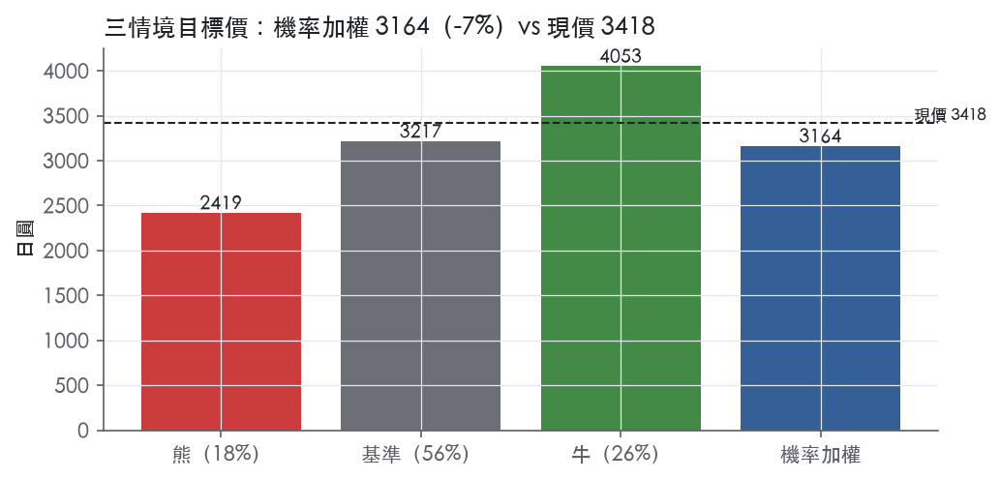
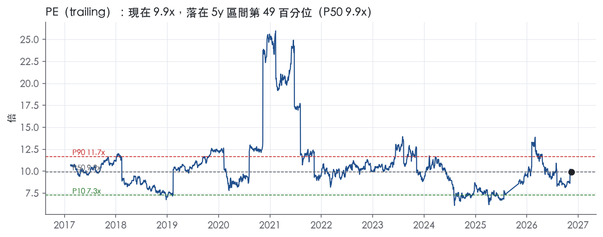
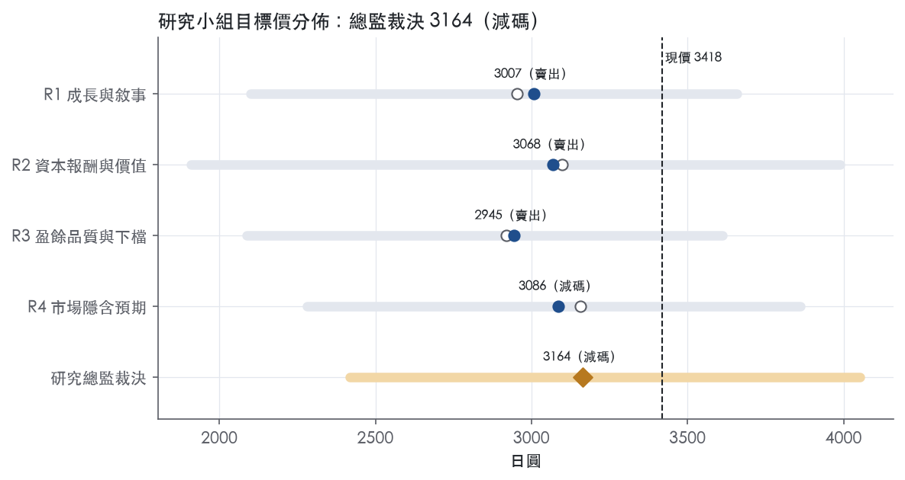
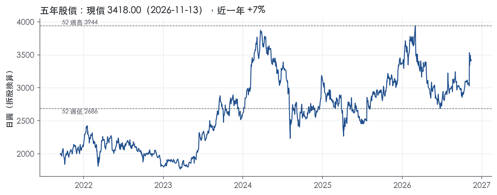

評等總表 › 未分類 › 7203.T
トヨタ自動車（7203.T）
現價約當公允，正常化 EPS 不成長難達 8.1% 門檻，中性｜評等 減碼｜目標價 3164
評等歷史與財報快評
| 報告日 | 評等 | 目標價 | 當時股價 | 超額報酬 |
|---|---|---|---|---|
| 2026-11-13 | 減碼 | 3,164 | 3,418 | -12.6% |
| 評等 | 減碼（邊界，鄰近賣出） |
| 12 個月目標價 | 3164 日圓 |
| 現價 | 3418.00 日圓（2026-11-13） |
| 預期報酬 | 股價 -7.4%＋股息 2.9%＝總報酬 -4.5%；日股門檻 8.1%，超額 -12.6% |
| 估值方法 | P/E 11.5x，套在第 5–8 季的EPS（也就是一年後的未來四季） |
| 三情境 | 熊 2419／基準 3217／牛 4053 |
| 研究流程 | 四位研究員兩輪辯論＋研究總監裁決 |
| 資料來源 | EDINET、TDnet、J-Quants、Yahoo、FRED（全免費） |
目錄
第一章 結論摘要
現價約當公允，正常化 EPS 不成長難達 8.1% 門檻，中性（研究總監裁決，四位研究員兩輪辯論後）
評等 減碼（邊界，鄰近賣出）｜12 個月目標價 3164 日圓（總監三情境機率加權 3291 與研究員中位數 3038 各半）｜現價 3418.00（2026-11-13）
預期報酬：股價 -7.4%＋股息 2.9%＝總報酬 -4.5%。日股門檻 8.1%，超額 -12.6%，離賣出的分界不到三個百分點，屬邊界評等（落在其他級距的機率約三成）。
估值方法：P/E 11.5x，套在第 5–8 季的EPS（也就是一年後的未來四季）。三情境：熊 2419（18%）／基準 3217（56%）／牛 4053（26%）。
立場中性而評等減碼：評等看的是「預期總報酬 -4.5% − 日股門檻 8.1%」＝超額 -12.6%，不是絕對漲跌；中性但超額偏離門檻，代表情境機率或股利把報酬推離門檻。
什麼會讓研究總監改變看法：FY2028 期初計畫營業利益低於 FY2027 實績、且 FY2027Q3 累計原価改善拖累仍以上半年速度擴大，我把 y2 營益率降到 R3 的 7.2%、倍數降到 10.8x 轉看空；FY2028 計畫高於實績且公司公布 1,500B 以上買回額度，倍數上修至 12.5x 轉看多。
投資論點
- 正常化EPS不成長：公司計畫EPS 299.95與FY2026的295.25持平，總報酬達不到8.1%門檻。
- 營收成長靠匯率：上半年連結販売台数年減0.5%，營收增加來自匯率，量沒有成長。
- 計畫上修即轉多：FY2028計畫若高於FY2027實績，且買回達1,500B以上，本行轉看多。
關鍵數字
| 過去四季（實際，FY2027Q2） | 未來四季 | 第 5–8 季 | 第 9–12 季 | |
|---|---|---|---|---|
| 營收（B） | 53,016.7B | 55,137.3B | 57,067.1B | 59,064.5B |
| 營收成長 | 7.4% | 4.0% | 3.5% | 3.5% |
| 營業利益率 | 7.5% | 7.3% | 7.6% | 7.6% |
| EPS（日圓） | 345.15 | 253.10 | 279.72 | 296.93 |
| EPS 成長 | -2.4% | -26.7% | 10.5% | 6.2% |
| 每股股息（日圓） | — | 0.00 | 0.00 | 0.00 |
| P/E（現價） | 9.9x | 13.5x | 12.2x | 11.5x |
| 股息殖利率（現價） | 2.9% | — | — | — |
過去四季為申報數字；預測為研究總監的假設、程式計算。倍數與殖利率都用現價計算，用來看現價對應各期獲利的高低。
三情境
| 情境 | 機率（歷史） | 故事 | 未來四季營收成長 | 第 5–8 季營益率 | 倍數 | 目標價 | 股價漲跌 |
|---|---|---|---|---|---|---|---|
| 熊 | 18%（16%） | 風險表第 1 條日銀升息使日圓兌日圓回到 145（假設）匯率轉逆風、第 2 條本行下行路徑失業率 5.1 加高關稅持續使北美量縮、第 3 條損益分岐台数上升放大利潤下滑；盈餘與倍數同步壓縮，維持 R4 基準到熊約 −12% 的相對壓縮，與 R3 熊倍數同值 | 2.0% | 6.8% | 10.0x | 2419 | -29.2% |
| 基準 | 56%（58%） | 量平、匯率 158.23 持平（假設）、原価改善續負但不再擴大、買回回到常態、持分法水位因自動織機出售下修，正常化 EPS 不成長 | 4.0% | 7.6% | 11.5x | 3217 | -5.9% |
| 牛 | 26%（26%） | 日圓 158 持平或續貶、美國走本行上行路徑、原価改善於 FY2027Q3 轉正、FY2028 計畫高於 FY2027 實績；市場在更高盈餘上照付接近現價隱含的倍數，不另外重估（低於 12.7x），維持 R4 基準到牛約 +10% 的倍數擴張 | 7.0% | 8.4% | 12.5x | 4053 | 18.6% |
目標價由程式依研究總監的驅動與倍數計算；機率由研究總監給定。括號內是歷史頻率：把這檔股票過去十年 12 個月報酬的波動形狀，置中在基準情境，結果落在各情境附近的比例。

四位研究員用不同方法各自估值，回應研究總監的質疑後交出第二輪，最後由總監逐點裁決。各研究員的主張見第七章，裁決理由見第八章，完整論證見《研究底稿》。
| 立場（一輪→二輪） | 加權目標價（一輪→二輪） | 評等（一輪→二輪） | 第二輪倍數 | 熊～牛目標價 | |
|---|---|---|---|---|---|
| R1 成長與敘事 | 中性→看空 | 2954→3007 | 賣出→賣出 | 11.5x | 2100～3658 |
| R2 資本報酬與價值 | 看空→看空 | 3099→3068 | 減碼→賣出 | 11.5x | 1910～3989 |
| R3 盈餘品質與下檔 | 看空→看空 | 2920→2945 | 賣出→賣出 | 11.0x | 2089～3611 |
| R4 市場隱含預期 | 中性→看空 | 3158→3086 | 減碼→減碼 | 10.8x | 2281～3861 |
| 研究總監裁決 | 中性 | 3164 | 減碼 | 11.5x | 2419～4053 |
目標價由程式依各自的驅動與倍數計算；評等＝機率加權總報酬 − 日股門檻。
第二章 業務概況
公司做什麼、賣給誰
豐田是以汽車事業為核心、外加金融與其他事業的全球汽車製造集團。公司在有價證券報告書自述：「自動車事業を中心に、金融事業およびその他の事業を行っています」。自動車事業涵蓋轎車、小型車、SUV、卡車等整車與零組件的設計、製造及銷售，國內由自家、日野自動車、大發工業製造，部分委外予豐田車體等子公司，海外則由肯塔基等地的製造公司生產。產品在國內經由豐田出行東京等全國經銷商與部分大客戶直銷，海外則透過美國豐田汽車銷售等各地銷售公司賣給終端消費者。FY2026（2026年3月期）合併營收50,684.95B日圓，LTM（至FY2027Q2）營收53,016.66B日圓。
業務分部與產品
公司依IFRS分三個報告分部：自動車、金融、其他（主要是資訊通信事業）。FY2027上半年（2026年4-9月）自動車事業外部營收23,981.1B日圓，佔合併營收26,962.5B日圓中絕大部分，營業利益1,598.2B日圓；金融事業營收2,762.1B日圓、營業利益472.4B日圓，年增18.5%，主因融資餘額增加；其他事業（資訊通信等）營收938.9B日圓、營業利益129.0B日圓，年增87.3%，基數小但成長最快。自動車事業的代表車型包括LS、RX、Crown、Corolla、RAV4、Yaris、Camry、Tacoma、Land Cruiser、Alphard、Prius等，涵蓋從小型車到豪華車（Lexus）等全產品線；日野自動車已於2026年4月1日因與三菱扶桑經營整合而從合併子公司除外。當期研發支出合計1,522.9B日圓，其中自動車事業佔1,507.0B日圓、其他事業15.8B日圓，聚焦SDV（軟體定義汽車）、BEV與Arene軟體開發平台。設備投資合計2,390.7B日圓（不含租賃資產），其中自動車事業2,284.1B日圓、金融事業41.8B日圓、其他事業64.7B日圓；另有租賃用資產投資3,639.7B日圓，主要是Toyota Motor Credit購置供營業租賃的車輛。
客戶、地區與通路
豐田的客戶結構以終端個人消費者與車隊／大客戶直銷並存，通路依地區分為經銷商網路與金融子公司搭售。FY2027上半年按地區：日本營收11,752.5B日圓、營業利益1,253.3B日圓，年增12.2%，主因匯率變動影響；北美營收11,922.1B日圓、營業利益166.1B日圓，較去年同期大幅增加，主因費用減少與節流努力；歐洲營收3,755.6B日圓、營業利益219.2B日圓，年增9.2%，主因營業面努力；亞洲營收4,677.3B日圓，但營業利益437.1B日圓較去年同期減少1.6%，主因各項費用增加；其他地區（中南美、大洋洲、非洲、中東）營收2,658.2B日圓，營業利益200.9B日圓亦小幅減少，主因銷售面影響。全球合併銷售台數上半年為4,758,000台，年減25,000台（0.5%）；日本國內銷售1,024,000台，年增54,000台（5.6%）；海外銷售3,734,000台，年減79,000台（2.1%）。日本市場靠內需支撐成長，海外（尤其北美）則靠匯率與節流撐住利潤，銷量本身略為疲弱。此外公司持有KDDI（989.6B日圓）、NTT（317.4B日圓）、MS&AD（283.7B日圓）、MUFG（266.7B日圓）、SUZUKI（180.0B日圓）等政策保有股，意在維繫汽車相關的資訊、金融、零組件採購與業務合作關係；上市股票合計貸借對照表計上額3,237.5B日圓，佔合併淨資產8.1%，持股檔數從FY2022的148檔持續縮減至FY2026的114檔。
最近四季發生了什麼
最近四季營收持續雙位數年增，但營益率波動明顯，主因匯率與一次性費用交織。FY2026Q3（2025年10-12月）營收13,456.85B日圓、年增8.6%、營益率8.9%、淨利1,257.46B日圓。FY2026Q4（2026年1-3月）營收12,597.35B日圓、年增僅1.9%，營益率驟降至4.5%，淨利817.21B日圓，為近八季獲利率最低的一季。FY2027Q1（2026年4-6月）營收回升至13,525.40B日圓、年增10.4%，營益率回升至7.9%，淨利1,477.04B日圓。FY2027Q2（2026年7-9月）營收13,437.06B日圓、年增8.6%，營益率8.4%，但淨利759.40B日圓反而較上季下滑，主因持分法損益與匯兌損失波動。公司最新決算短信揭露FY2027上半年（4-9月合計）營收26,962.5B日圓、年增9.5%，營業利益2,191.1B日圓、年增9.2%，稅前中間利益2,954.4B日圓、年增19.2%，歸屬母公司中間淨利2,236.4B日圓、年增26.1%；在營業利益增減因素中，匯率變動貢獻685.0B日圓、營業面努力貢獻165.0B日圓，原價改善努力反而拖累340.0B日圓、其他因素拖累304.6B日圓。資產負債表上，9月底現金及約當現金9,484.4B日圓，較3月底的12,659.6B日圓減少25.1%，主因財務活動現金流出4,207.9B日圓（含庫藏股買回3,851.9B日圓）；股東權益（資本合計）降至38,306.4B日圓，較3月底減少6.6%，主因大規模庫藏股買回與豐田自動織機股票處分。公司FY2027全年計畫（業績予想）為營收53,500.00B日圓、營業利益3,900.00B日圓、稅前利益4,960.00B日圓、歸屬母公司淨利3,570.00B日圓、每股盈餘299.95日圓；以上半年稅前利益2,954.4B日圓對比全年計畫4,960.0B日圓，達成率已近六成，顯示公司計畫仍偏保守，這正是日股常見的期初保守慣例。
公司自己說的成長引擎與策略
公司將自身定位從汽車製造商轉型為「移動出行公司」（モビリティカンパニー），核心成長引擎是SDV（軟體定義汽車）、品牌矩陣擴張與售後價值鏈。公司表示：「交通事故ゼロ社会の実現はクルマの技術革新だけでは難しく「クルマ」「ヒト」「インフラ」の三位一体での取り組みが不可欠」，並強調安全安心為SDV第一要務。公司提到改款RAV4首次搭載自研軟體平台「Arene」，並在中國推出本地開發的純電車bZ5，Lexus亦推出全面改款的新一代ES作為電動化先鋒。公司強調「商品軸」與「地域軸」雙重經營策略，透過TNGA群戰略與「その町いちばんのクルマ屋」的地域深耕建立收益基盤，並新增「センチュリー」品牌、擴大IMV Origin等客製化車型以增加產品選擇。售後價值鏈（バリューチェーン事業）被視為第二成長引擎，立基於全球150M台保有車隊，透過維修、保值、二手車與保險等服務創造新車銷售後的長期收益。公司同時點名損益平衡點（損益分岐台数）近期因人才與未來投資擴大、加上美國關稅影響而大幅上升，必須靠全公司固定費檢討與AI導入提升生產力來改善。另外，Toyota Woven City於2025年9月正式啟用，被定位為「移動出行測試場」，用以驗證人、車、基礎設施協同的未來城市模式。整體看，豐田的敘事是「燃油車現金流養軟體與電動化轉型」，上半年匯率順風掩蓋了原物料與費用上升的壓力，北美關稅與原價改善能否守住是觀察下半年營益率的關鍵變數。這組合在日股脈絡下也呼應東證對資本效率與政策保有股處分的要求，公司持續縮減政策保有股並執行大規模庫藏股買回，是資本回報面的加分項。

第三章 經濟護城河
結論：無，趨勢穩定
豐田評為「無護城河」，趨勢穩定。豐田相對同業有真實的競爭優勢，包括品牌與殘值、量產成本體系、以及系列供應鏈，但這些優勢沒有轉化成高於資本成本的資本報酬。依本行標準，我們沒有把握未來 5 年 ROIC 能穩定高於資本成本，所以只能給「無」。趨勢判為穩定而非變窄，理由是 ROIC 七年來大致落在同一區間；成本面的新壓力已經出現，但還沒反映成結構性下移。
優勢來源
無形資產（品牌與殘值）是最站得住的一項。
- 公司自述，「商品軸・地域軸経営によって築かれた強いブランド」帶動多樣化商品，在全球累積 150M 台保有車輛（原文以日文單位表記，此處改寫為 M）。
- 公司把維修便利性、補給零件供應力與「高水準の残価」並列為售後價值鏈的支柱。
- 高殘值會同時降低消費者的持有成本和金融子公司的租賃風險，這是品牌轉成經濟利益的具體管道。
成本優勢（規模與系列供應鏈）存在，但正在受壓。
- 公司以 TNGA 推動車系的「群戦略」，並自稱藉此「強固な収益基盤を着実に築いてきました」。
- 研發支出達 1,522,881M 日圓。不含租賃資產的設備投資合計 2,390,659M 日圓。
- 豐田以持分法持有電裝 22.26%、愛信 22.37%、豐田紡織 32.45% 等核心供應商。
- 這套規模加系列的體系讓豐田的原價改善能力領先同業，但它是「比同業便宜」，不是「便宜到能賺超額報酬」。
轉換成本、網路效應、效率規模三類，我們找不到足夠證據，所以不列。保有車隊搭配金融與售後服務有黏著度，但消費者換車時換品牌的成本很低，不構成轉換成本護城河。
數字上看得到嗎
數字不支持任何程度的護城河：ROIC 從未高於資本成本。
| 指標 | 數值 |
|---|---|
| ROIC 十年平均 | 4.9% |
| ROIC 最高 | 7.0% |
| 資本成本代理值 | 10.1% |
| ROIC 平均減資本成本 | -5.2% |
| 有資料的 7 年中，ROIC 高於資本成本的年數 | 0 年 |
我們檢查了兩個可能替公司辯護的理由，結論都不足以翻轉評級：
- 資本成本代理值偏高。 程式用美國 10 年債建構代理值，對以日圓融資的豐田偏高；日本 10 年債為 3.05%，改用日債基準會縮小差距。但 ROIC 十年平均只有 4.9%，我們不認為換基準就能讓利差穩定轉正。
- 金融事業稀釋 ROIC。 投入資本含大量金融與租賃資產，會拉低合併 ROIC。但即使剔除，製造本業也需要長期穩定的高報酬才撐得起「窄」，而 FY2024 的高點 7.0% 主要來自匯率順風，不是結構性改善。
利潤率穩定度是唯一偏正面的訊號。營業利益率十年平均 8.7%、標準差 1.4%、最低 7.3%，在景氣循環產業裡算穩。ROE 十年平均 11.5%看起來比 ROIC 好，但這是槓桿與政策保有股帶來的，不是本業超額報酬。
結論：穩定但偏低的報酬，符合「優秀的商品化製造商」，不符合「有護城河」。
什麼會侵蝕它
北美獲利結構是最直接的侵蝕點。
- 豐田汽車北美營業收益 17,482,901M 日圓，稅前虧損 -544,523M 日圓。
- 肯塔基製造公司債務超過 680,163M 日圓，印第安納製造公司債務超過 651,546M 日圓。
其次，公司自己承認損益平衡點在上升。公司表示，人才投資、未來投資擴大，再加上美國關稅影響，「損益分岐台数が大きく上昇しています」。成本優勢正是豐田最主要的優勢來源，損益平衡點上升代表這一項正在被吃掉。
第三，SDV 與 BEV 的競爭規則可能削弱既有的品牌與製造優勢。軟體平台 Arene 才剛在改款 RAV4 首度搭載。中國的純電車 bZ5 則是在當地開發後推出。軟體與電池成本若由新進者主導，豐田的原價改善經驗可移轉的部分有限。
對估值的含意
豐田不應獲得護城河溢價，目標倍數相對日系整車同業以持平為基準。目前 P/E 9.9x，正好在自身 5 年中位數 9.9x；在 ROIC 低於資本成本的前提下，倍數沒有理由長期高於這個中樞。若要給高於中位數的倍數，理由應該是庫藏股買回與政策保有股處分帶來的資本效率改善，而不是護城河。
量化底稿：報酬率與利潤率的水準與穩定度
| 指標 | 最新 | 十年平均 | 標準差 | 最低 | 最高 |
|---|---|---|---|---|---|
| ROIC | 4.3% | 4.9% | 1.0% | 3.8% | 7.0% |
| 營業利益率 | 7.4% | 8.7% | 1.4% | 7.3% | 11.9% |
| FCF 利潤率 | 5.8% | 4.8% | 1.7% | 2.8% | 7.6% |
| ROE | 10.1% | 11.5% | 2.2% | 9.0% | 15.8% |
程式計算。資本成本代理值（10 年債＋5%）：10.1%；ROIC 平均減資本成本：-5.2%；ROIC 有資料的 7 年中，高於資本成本 0 年。
第四章 財務體質與盈餘品質
結論：中品質，核心現金轉換尚可，但槓桿與FCF兩項紅旗主要來自金融子公司業務結構，需在估值時用拆分口徑調整而非直接打折盈餘
現金流轉換率（CFO/淨利）LTM為0.96x、近三年平均1.02x，長期十年平均1.35x，屬黃燈但方向未惡化。真正的兩個紅旗——自由現金流／淨利（LTM 0.39x）與淨負債／EBITDA（LTM 5.19x）——拆開來看，主因都是トヨタ的金融子公司（貸款與租賃業務）把資產負債表做大、把投資活動現金流做負，而非汽車本業盈餘品質惡化。因此整體評等給「中」，不是「低」，但估值研究員在用合併EV倍數時必須把金融業務的債務與EBITDA拆開再比較，否則會系統性低估汽車本業的真實槓桿與現金生成能力。
現金有沒有跟上盈餘
CFO大致跟得上淨利，但FCF因資本支出與金融應收款擴張被明顯壓低。FY2026全年CFO為5,472.92B，淨利3,848.10B（年度表），單年比率優於量化底稿的LTM與三年平均【判，數字引自年度表】。公司在財報分析中說明，當年度營業活動によるキャッシュ・フローは前期の3,696.93B（年度表FY2025 CFO）に対し5,472.92B（年度表FY2026 CFO）に増加し、これは主に法人所得税の支払額減少によるものとされている。但自由現金流LTM僅1,669.35B，FCF／淨利三年平均僅0.49x，主因是資本的支出（含賃貸資産）FY2026為6,059.7B，與前年度幾乎持平，加上金融事業に係る債権合計FY2026較前期增加5,341.6B，主要是顧客與販賣店融資餘額上升。這筆融資債權增長計入投資活動現金流出，但本質是生息資產擴張，不是費用性支出，所以FCF/NI偏低有相當一部分是業務結構造成的假警報，不應視為盈餘灌水。半年報也顯示同一模式持續，營業活動によるキャッシュ・フローH1 FY2027為1,603.92B，較前年同期2,944.61B減少1,340.6B，公司解釋主要與法人所得税支払額增加等時點因素有關，屬於季節性而非結構性惡化。
公司調整了什麼（GAAP 與非 GAAP 的差距）
トヨタ採IFRS編製，決算短信與有報都沒有另外揭露美式「非GAAP調整後EPS」，取而代之的是營業利益年增減因子拆解表，這本質上是GAAP內部的因子橋接，不是剔除項目。FY2026全年營業利益年減1,029.3B中，諸經費の増減・低減努力為-2,030.0B、為替変動の影響為-195.0B、原価改善の努力為-120.0B，部分被營業面の努力710.0B與その他605.7B抵銷。半年報同樣拆解：営業面の努力165.0B、為替変動の影響685.0B為正貢獻，原価改善の努力為-340.0B、諸経費の増減・低減努力為-20.0B、その他為-304.6B。另外損益表上還有兩塊真實波動但非核心的項目：その他の金融収益H1 FY2027為1,007.86B，較前年同期292.75B大增，公司在有報說明FY2026的增加主要來自有價証券売却益；為替差損益＜純額＞H1 FY2027為-145.38B，較前年同期-52.79B惡化。我判斷為替変動の影響與有價証券評価／売却損益屬於非經營性波動，研究員在拉長期盈餘趨勢時應予以平滑，但不構成財報造假或盈餘操縱的證據。
資產負債表與資本配置
淨負債33,715.33B看似很高，但絕大部分來自金融子公司的放款與租賃負債，不是汽車本業槓桿。拆開合併資產負債表，自動車等（汽車＋其他）segment在FY2026的有利子負債合計為976.24B（流動）加1,823.84B（非流動）＝2,800.08B，而金融segment的有利子負債則高達17,042.89B（流動）加23,904.82B（非流動）＝40,947.71B。全公司有利子負債比率（對母公司所有者持分）FY2025為108.0%，FY2026上升至108.2%，但信用評等機構並未視為風險惡化：長期債務S&P給A+、Moody's給A1、R&I給AAA，短期債務S&P給A-1+、Moody's給P-1。資本配置方面，股利加回購／淨利三年平均24.6%屬黃燈但不是舉債發股利的紅色訊號。半年報顯示H1 FY2027自己株式取得高達3,851.89B，加上配当金支払額651.70B，使資本合計自41,020.07B降至38,306.38B，減少2,713.6B（6.6%），這呼應東證對股東回報與PBR改善的要求。稀釋股數年變動-1.7%顯示回購確實持續在減少股數，是真實的股東回饋，不是帳面遊戲。
紅旗逐條說明
紅旗一：自由現金流／淨利 LTM 0.39x、近三年平均0.49x——判斷為部分真實、部分會計口徑造成的假警報。真實的一面是資本的支出（含賃貸資産）維持在6,059.7B的高水位，連續兩年持平而非下滑，顯示本業資本密集度確實高，壓低FCF；但另一部分是金融業務應收款增長5,341.6B被計入投資活動現金流出，這是生息資產擴張而非資本耗損，若按汽車本業單獨衡量，FCF轉換率會明顯好轉。
紅旗二：淨負債／EBITDA LTM 5.19x、近三年平均4.28x——判斷主要是會計口徑造成的假警報。合併淨負債把金融子公司40,947.71B的放款融資負債和汽車本業2,800.08B的負債加總在一起，但分母EBITDA主要反映汽車與其他本業的獲利能力，造成分子分母口徑不一致，槓桿倍數被系統性放大。信用評等機構S&P A+、Moody's A1、R&I AAA的穩定評等，以及有報說明長期借入債務期限分散在2026年至2048年、無重大集中到期壓力，都支持這不是真實信用風險升高。其餘黃燈（CFO/淨利、應計比率、股東回饋比率）均落在合理波動範圍，不構成額外紅旗需要解釋。
對估值的含意
估值應以GAAP淨利為主軸，不需要對盈餘本身打折，因為應計比率與CFO/淨利都沒有顯示操縱盈餘的證據。但在用EV/EBITDA或EV/EBITA做跨公司比較時，必須把金融segment的債務與EBITDA拆開（自動車等2,800.08B vs 金融40,947.71B），否則トヨタ的合併槓桿倍數會被嚴重高估，壓低應給的目標倍數。FCF為基礎的估值方法（如FCF殖利率）應優先使用汽車本業自由現金流而非合併口徑，因為合併FCF會隨金融放款規模週期性波動，不適合直接套用於永續性估值。
量化底稿：盈餘品質計分表
| 項目 | LTM | 近三年 | 十年 | 燈號 | 規則 |
|---|---|---|---|---|---|
| 營業現金流／淨利 | 0.96x | 1.02x | 1.35x | 黃 | ≥1.00x 綠、<0.80x 紅 |
| 自由現金流／淨利 | 0.39x | 0.49x | 0.61x | 紅 | ≥0.90x 綠、<0.60x 紅 |
| 應計比率（(淨利−CFO)／平均總資產） | 0.2% | 0.1% | -1.1% | 黃 | ≤0.0% 綠、>5.0% 紅 |
| SBC／營收 | — | — | — | — | ≤3.0% 綠、>8.0% 紅 |
| 淨負債／EBITDA | 5.19x | 4.28x | 4.48x | 紅 | ≤1.50x 綠、>3.00x 紅 |
| 利息保障倍數（營業利益／利息） | — | — | — | — | ≥8.00x 綠、<3.00x 紅 |
| 稀釋股數年變動 | -1.7% | -1.5% | -1.7% | 綠 | ≤0.0% 綠、>3.0% 紅 |
| （股利＋回購）／淨利 | 28.7% | 24.6% | 26.7% | 黃 | ≥50.0% 綠、<0.0% 紅 |
程式計算；燈號以 LTM（無則近三年平均）判定。
- 程式紅旗：自由現金流／淨利 紅燈（LTM 0.39x，近三年平均 0.49x）
- 程式紅旗：淨負債／EBITDA 紅燈（LTM 5.19x，近三年平均 4.28x）
第五章 主要風險
結論：豐田上半年的獲利成長九成以上是匯率順風堆出來的，一旦日圓兌日圓走升、關稅成本無法完全轉嫁，營益率會比帳面數字脆弱得多。
五大風險表
| 風險 | 觸發指標（看什麼數字、在哪裡看） | 對 EPS 的影響方向與粗略幅度 | 未來 12 個月發生機率 | 出處 |
|---|---|---|---|---|
| 匯率順風消失（日圓兌日圓走升） | 決算短信「營業利益増減要因」中「為替変動の影響」欄；USD/JPY即期匯率（158.23） | 負向、大：上半年匯率貢獻即達685.0B，佔營業利益增額185.4B的絕大部分，若匯率反轉，營益可能由增轉減 | 中高 | |
| 美國關稅／貿易政策（對北美成本與需求的衝擊） | 美國對日進口車關稅稅率公告；北美分部營業利益率、銷量 | 負向、中大：公司自述「対米輸出関税の大幅な引き上げ」已發生且「現在も高い関税率が継続」，並承認「コストを上昇させ、将来の需要の鈍化を引き起こす可能性」 | 高（已在發生） | |
| 原價改善能力轉負、損益平衡台數上升 | 決算短信「原価改善の努力」欄（逐季追蹤由正轉負）；有報揭露「損益分岐台数」上升的敘述 | 負向、中大：上半年「原価改善の努力」對營業利益已是負340.0B，而非過去慣見的正貢獻，且公司自承「損益分岐台数が大幅に上昇」 | 高 | |
| 電動化／SDV轉型執行不如預期、份額流失 | 新車型（Arene搭載車、bZ系列）上市進度與銷量；各地區銷售台數年增率 | 負向、中：公司自述若「お客様のニーズに対応する製品を開発・提供できない場合、販売シェアの縮小ならびに営業収益と利益率の低下を引き起こすリスク」，海外銷量已年減2.1% | 中 | |
| 金融事業信用與殘值風險 | Toyota Financial Services放款餘額、貸倒率、中古車價格指數 | 負向、中：公司自述「中古車の価格低下による残存価値リスクの増加、貸倒率の増加」為既定風險，金融事業營收年增18.5%但主要來自融資餘額擴大而非利差擴大 | 中 |
逐條說明
匯率是上半年利潤成長的最大單一因子，也是最大的下行風險來源。公司揭露上半年（2026年4-9月）營業利益年增185.4B，其中「為替變動の影響」單項貢獻685.0B，等同於若無匯率，營業利益實際是年減的狀態。目前現行日圓兌日圓158.23，較公司假設想定匯率已屬高位，一旦日圓升值方向逆轉，這685.0B的順風會變成逆風，且規模遠大於營益增額本身，EPS影響屬於「大」等級。
美國關稅已經是既定事實，不是假設性風險。有報明確寫「2025年には、自動車産業に特化した関税を含む対米輸出関税の大幅な引き上げ」且「現在も高い関税率が継続しています」，並警告「当社製品のコストを上昇させ、将来の需要の鈍化を引き起こす可能性」。北美上半年營業利益166.1B雖年增234.0B，但公司自己說增益主因是「諸経費の減少・低減努力」而非營業面改善，顯示這是靠砍費用撐出來的，關稅成本壓力仍未完全反映在損益表上。
原價改善能力轉負，是本季財報裡最該盯的細節。過去豐田的「原価改善の努力」長期是營益的正貢獻項，但上半年該項目是負340.0B，意味原材料、人工、零組件成本上升速度已超過公司內部降本能力。這與有報「経営方針」章節自承「損益分岐台数（近期因人才與未來投資擴大、加上美國関税影響而大幅上昇」互相呼應，代表公司需要銷量維持在更高水準才能打平，一旦需求轉弱，獲利槓桿會往下放大。
電動化轉型的執行風險是中期而非立即的。有報風險章節把「お客様のニーズに速やかに対応した、革新的で価格競争力のある新商品を投入する能力」列為專項風險，承認若跟不上需求變化會導致「販売シェアの縮小ならびに営業収益と利益率の低下」。目前海外銷量已年減2.1%（亞洲、其他地區營益也雙雙小幅減益），顯示份額壓力已經開始顯現，只是程度尚屬中等。
金融事業的風險被營收成長數字掩蓋了。金融事業上半年營收年增18.5%看似亮眼，但公司自己說增益原因是「融資残高が増加したこと」，而非利差或資產品質改善。有報同時警示「中古車の価格低下による残存価値リスクの増加、貸倒率の増加」是既有風險項，放款規模擴大同時代表一旦景氣轉弱，絕對虧損金額的敏感度也會放大。
公司沒寫、但我們認為該注意的
大規模庫藏股買回正在同時侵蝕股東權益與現金，和淨利下滑疊加會放大槓桿。上半年自己股票買回3,851.9B，加上政策保有股處分，資本合計（股東權益）從41,020.1B降至38,306.4B，減少2,713.6B（-6.6%），現金及約當現金同期減少3,175.1B（-25.1%）；若下半年獲利不如上半年（Q2單季淨利759.40B已較Q1的1,477.04B腰斬），買回節奏不變將使財務彈性進一步收窄。
日本國內銷量回升可能是一次性因素，非結構性需求回暖。上半年日本銷量年增5.6%、營收年增11.8%，公司自稱增益主因是「為替変動の影響」而非銷售面改善，意味日本市場的強勁不能簡單外推到下半年或明年。
第六章 市場在定價什麼
現價 3418.00 對應 trailing（過去四季）P/E 9.9x、EV/EBITDA 11.4x、EV/EBITA 18.7x、EV/Sales 1.4x、FCF 殖利率 4.2%。主要估值倍數 P/E 現在 9.9x，落在5 年區間第 49 百分位（P10／P50／P90 = 7.3x／9.9x／11.7x）。

把程式的機械基準預測放到現價下，市場付的前瞻倍數是：P/E（未來四季） 12.7x、P/E（第 5–8 季） 11.3x。反推 DCF 顯示市價隱含未來五年營收年成長 9.2%（WACC 9.0%、終值成長 3.0%、FCF 利潤率 5.7%，SBC 不加回）。
| 倍數 | 現在 | 5 年 P10 | 5 年 P50 | 5 年 P90 | 現在分位 | 全期 P50 |
|---|---|---|---|---|---|---|
| P/E | 9.9x | 7.3x | 9.9x | 11.7x | 49.2% | 10.2x |
| EV/EBITDA | 11.5x | 8.5x | 10.6x | 11.6x | 87.3% | 10.8x |
| EV/EBITA | 18.9x | 11.8x | 16.5x | 19.6x | 78.2% | 16.9x |
| EV/EBIT | 18.9x | 11.8x | 16.5x | 19.6x | 78.2% | 16.9x |
| EV/Sales | 1.4x | 1.3x | 1.5x | 1.6x | 30.7% | 1.5x |
| P/S | 0.8x | 0.7x | 0.9x | 1.0x | 25.4% | 0.8x |
| P/FCF | 24.6x | 13.8x | 18.5x | 25.1x | 88.6% | 18.8x |
trailing 倍數（股價 ÷ 過去四季）；分位以每個交易日計算。
（日股同業籃尚未建置：評等門檻用日股絕對門檻＝日本 10 年公債＋股權風險溢酬 5%，見首頁。）
事後實現前瞻倍數帶（P/E，2018-11-21..2025-11-19）：P10／P50／P90 = 6.2x／9.1x／12.8x。它是每個交易日的股價除以之後四季實際實現的指標；一年後，今天的第 5–8 季正是那時的未來四季，所以這條帶是 12 個月目標價的同口徑倍數。因為用的是事後實際而非當時預期，過去成長超乎預期的公司這條帶會偏低。
程式的機械基準（成長率從過去四季年增率三年收斂到 6%、利潤率持平）用 事後實現前瞻 P/E P50 估值得到 2739（-19.9%），市場現行前瞻倍數（現價 ÷ 基準 未來四季指標）一年後持平，套在基準 第 5–8 季指標得到 3830。這兩個數字只是參考點，不是本報告的目標價；研究員對這個定價的回應在第七章。
第七章 四位研究員的看法
下表是每位研究員第一輪（各自獨立）與第二輪（回應研究總監的質疑後）的結果。目標價全由程式依各自的假設計算。
| 立場（一輪→二輪） | 加權目標價（一輪→二輪） | 評等（一輪→二輪） | 第二輪倍數 | 熊～牛目標價 | |
|---|---|---|---|---|---|
| R1 成長與敘事 | 中性→看空 | 2954→3007 | 賣出→賣出 | 11.5x | 2100～3658 |
| R2 資本報酬與價值 | 看空→看空 | 3099→3068 | 減碼→賣出 | 11.5x | 1910～3989 |
| R3 盈餘品質與下檔 | 看空→看空 | 2920→2945 | 賣出→賣出 | 11.0x | 2089～3611 |
| R4 市場隱含預期 | 中性→看空 | 3158→3086 | 減碼→減碼 | 10.8x | 2281～3861 |
| 研究總監裁決 | 中性 | 3164 | 減碼 | 11.5x | 2419～4053 |
目標價由程式依各自的驅動與倍數計算；評等＝機率加權總報酬 − 日股門檻。
分歧度：第一輪 加權目標價 2920～3158（區間＝現價的 7%）· 倍數 9.5～11.5x · 立場 中性×2、看空×2；第二輪 加權目標價 2945～3086（區間＝現價的 4%）· 倍數 10.8～11.5x · 立場 看空×4（方向一致）。

| 研究員 | 第二輪主張 | 堅持的理由 |
|---|---|---|
| R1 成長與敘事 | 偏空，11.5x，正常化EPS沒有成長，複利故事不成立。 | 股數只年減2.5%，上半年3,851.9B買回與自動織機重整同期，不是常態。 |
| R2 資本報酬與價值 | 偏空，11.5x，ROIC低於資本成本，不給溢價。 | ROIC十年平均4.9%，七年都沒高於資本成本10.1%。 |
| R3 盈餘品質與下檔 | 偏空，11.0x，上半年增益靠匯率，原価改善轉負。 | 其他金融收益1,007.86B來自出售與評價，不能外推。 |
| R4 市場隱含預期 | 偏空，10.8x，FY2028匯率紅利退潮還沒反映在股價。 | 北美稅前虧損−544.52B，兩家製造子公司債務超過，屬結構性虧損。 |
每位研究員的逐條回應與完整論證見《研究底稿》（7203.T_研究底稿_2026-11-15.docx）。
第八章 研究總監裁決
分歧登記
| 分歧點 | R1 | R2 | R3 | R4 | 什麼資料會分出勝負 |
|---|---|---|---|---|---|
| NTM 營益率（op_margin_y1） | 7.3%：計畫隱含下半年低於上半年 | 7.2%：匯率順風減弱 | 7.4%：沿用基準 | 7.7%：假設實績超計畫 | 2027-05 FY2027 短信營業利益對計畫 3,900.00B 的差距；2027-02 FY2027Q3 單季營益率 |
| Q5–Q8 營益率（op_margin_y2） | 7.6%（y3 7.8%）：諸経費停止擴大 | 7.0%：原価改善拖累、損益分岐台数上升 | 7.2%：同 R2 | 7.6%：匯率貢獻歸零但諸経費已收斂 | 2027-02 累計「原価改善の努力」是否停止以上半年 −340.0B 的速度擴大；2027-05 FY2028 計畫營益率 |
| 目標倍數與口徑 | 11.5x eps@ntm，trailing 5y P50 錨 | 11.5x eps@q5_q8，完整口徑 9.5x | 11.0x eps@q5_q8，P50–P75 | 10.8x eps@q5_q8，低於市場持平 | 2027-05 FY2028 計畫是否低於 FY2027 實績；自動織機出售後下半年持分法水位對上半年 358.36B |
| 股數年變動 | −2.5% | −3.0% | −2.0% | −2.0% | 2027-11 FY2028 上半年自己株式取得額；保有株檔數是否自 114 檔續降 |
| 營收路徑 y1／y2 | 3.5／3.5% | 4.0／3.0% | 4.0／4.0% | 4.0／3.5% | FY2027 營收對計畫 53,500.00B；FY2028 上半年連結販売台数對 4,758,000 台 |
逐點裁決
1. NTM 營益率：選 R1 的 7.3%。 計畫營業利益 3,900.00B 對上半年已實現 2,191.1B，隱含下半年明顯低於 7.9%、8.4% 的單季水位。NTM 是 FY2027 下半年加 FY2028 上半年，前半段被計畫壓住，後半段在日圓兌日圓 158.23持平的假設下只能回到今年上半年附近。R4 的 7.7% 要 FY2027 大幅超計畫、FY2028 上半年又不低於今年上半年，兩個條件同時成立；R2 的 7.2% 則是把下半年當全年。
2. Q5–Q8 營益率：選 R4 的 7.6%，退回 R2 的 7.0% 與 R3 的 7.2%。 第一，原価改善 −340.0B 與損益分岐台数上升已在上半年兩季 7.9%、8.4% 的水位裡；匯率順風「消失」是年增量歸零，不是水位下降，R3 自己也假設匯率持平。第二，7.0–7.2% 作為非衰退年常態低於十年最低 7.3%（護城河章量化底稿），而本行總經基準情境是放慢不衰退。第三，y2 的證據方向偏上：諸経費拖累從 FY2026 的 −2,030.0B 收斂到上半年 −20.0B；本行前提把銅 14,473 放在第 100 百分位、風險偏下，WTI 從 103 回到 88，這是原価改善欄位最大的外生變數。本部紀錄也要修正：營業利益誤差中位數機械基準 −4.4%、R2 −4.8%、R3 −3.3%，系統性偏低；R4 的 +0.2% 與 74% 勝率最準。7.6% 仍低於十年平均 8.7%。
3. 目標倍數：own，12.0x eps@q5_q8。 四人的錨都是事後實現前瞻帶 P50 9.1x，上修樣本期 EPS 從 129.02爬到 359.56造成的偏低，再校正模型 EPS 不含持分法，落在 10.8–11.5x。R2 自述這等於完整口徑 9.5x，低於 trailing 5y P50 9.9x 與 10y P50 10.2x——四人都在主張去評價。我不接受，因為理由都不是增量：R2 的 ROIC 低於資本成本在有資料的七年中年年如此，正是形成中位數的樣本；R3 的三點（增益靠匯率、原価改善轉負、一次性金融收益墊高稅前）是 EPS 水位問題，已由驅動吃掉，倍數再扣一次是重複計算；R4 的北美稅前虧損 −544.52B是存量事實，股價從 52 週高點 3944 回到 3418 已經看過。反過來沒有人把資本效率放進倍數：買回 3,851.9B、保有株 148 檔降到 114 檔、信評 A+／A1／AAA、股息率 2.9%，這是東證改革下日股重估的主軸，R1 的「小幅溢價」最接近。我的錨：申報口徑取 10y P50 10.2x，無護城河不給溢價；正常化 EPS 持平（計畫 299.95 對 FY2026 的 295.25）時前瞻等於 trailing，9.1x 會低估。口徑校正的量級代理是上半年持分法 358.36B 對基準 NTM 淨利 3,152.77B、計畫 EPS 299.95 對模型 NTM EPS 268.98，校正後落在前瞻帶 P75 11.3x 到 P90 12.8x 之間，取 12.0x。低於市場持平 12.7x 的個股理由有二：豐田自動織機股份已出售，FY2028 持分法水位低於上半年年化；R4 指出 2027 年 5 月 FY2028 計畫若低於 FY2027 實績會被貼「盈餘高點」標籤。R1 的 trailing 錨配 未來四季 口徑合法但與主尺不同，不採。
4. 股數：選 R1 的 −2.5%。 基準 −5% 四人都退回，我同意：3,851.9B 的買回與自動織機股權重整同期，不是常態。歷史軌跡 15.28B 到 13.03B支持 R3、R4 的 −2%，但那段發生在東證資本成本要求之前，剩餘上市保有株 3,237.5B 是明確的增量來源。R2 的 −3% 要求每年買回遠超過 LTM FCF 1,669.35B扣掉半年股利 711.7B後的內生現金，只能靠保有株兩三年內處分完，他沒有公司時程支持。
5. 營收路徑：選 R4 的 4.0／3.5／3.5%。 基準 6.9% 是匯率墊高的 LTM 外推；上半年連結販売台数 4,758,000 台年減 0.5%、海外年減 2.1%，量沒有成長。R4 的兩個錨最清楚：計畫 53,500.00B 只略高於 LTM 53,016.66B，y2 等於 y3 即 FY2028 上半年不加速。R1 多扣的 0.5 個百分點把 FY2026 匯率逆風 −195.0B 當低基期，方向對但未量化；R3 的 y2 4.0% 高於他自己的量平主張。金融事業營收年增 18.5%、其他事業年增 27.6%是四人未提、卻撐住合併營收不跌到量的那條線的理由，支持 3.5% 而非 R2 的 3.0%。
漂移與總經偏離。 漂移表：R1 向中位數靠攏 37%、R4 35%、R2 22%、R3 14%，接受的意見全部附證據，無程式旗標；逐條核對，四人的變動都對應我第一輪的具體意見與引用原文（R2 的 9.5x→11.5x 是 V1 口徑改正的重新表達，加權只動 −1.0%），drift_rejections 為空。唯一記一筆：R1 把熊機率從 20% 砸到 10%，低於程式對照的歷史 13%，矯枉過正，我不採他的機率。總經偏離：R1、R2、R3 為空，R2、R3 的日圓兌日圓 155、140 依日股補充規則列為正文假設，合規；R4 一筆（僅熊情境，日圓廣義指數 124.0→121.3）接受——豐田的匯率敏感度集中在日圓兌日圓，本行下行路徑的強日圓對豐田是換算順風，與熊機制（日銀升息、日圓升值）相反，而本行尚無日本利率與匯率前提。
最終假設與目標倍數
與機械基準不同的驅動：
- rev_growth_y1 4.0%、y2 3.5%、y3 3.5%（基準 6.9／6.5／6.0%）：裁決 5。
- op_margin_y1 7.3%（基準 7.4%）：計畫路徑，裁決 1。
- op_margin_y2、y3 7.6%（基準 7.4%）：匯率持平下回到上半年附近水位，原価改善續負，仍低於十年平均，裁決 2。
- share_change_pct −2.5%（基準 −5.0%）：裁決 4。
- 稅率 25.3%、D&A 4.8%、資本支出 4.7%（不含賃貸資產，與 R3 Q3 口徑一致）、SBC 0% 沿用基準。
目標倍數 12.0x，eps，第 5–8 季。錨是事後實現前瞻 P/E 帶（與 q5_q8 同口徑，不換算），落在 P75 11.3x 與 P90 12.8x 之間，等於申報口徑 10y trailing P50 10.2x 經模型 EPS 不含持分法與淨金融收益的口徑校正。低於市場持平 12.7x 的理由是持分法水位下修與 FY2028 計畫的高點標籤風險，不是利率——日債 3.05%已在現價與 8.1% 門檻裡，R2、R3 第一輪用它壓倍數的部分第二輪已刪。同業：日股同業籃未建置，無法做相對處理；護城河章「相對日系整車同業持平」與 12.0x 不衝突。EV 系交叉驗證（EV/EBITDA 分位 87.3%、P/FCF 88.6%）被金融事業 40,947.71B 有利子負債污染，反推 DCF 的 FCF 利潤率同樣含金融債權擴張，兩者降權。
三情境與機率
- 基準 56%：上述驅動，12.0x。量平、匯率 158.23 持平（假設）、原価改善續負但不再擴大、買回回到常態、持分法水位因自動織機出售下修。
- 牛 26%，取自 R4：營收 7.0／5.5／3.5%、營益率 8.5／8.4／8.4%，倍數由他的 12.0x 微調為 13.0x——我的基準倍數比他高，維持牛對基準約一個轉折點的擴張。機制：日圓 158 持平或續貶、美國走本行上行路徑、原価改善於 FY2027Q3 轉正、FY2028 計畫高於 FY2027 實績，市場回到申報口徑 trailing 5y P90 11.7x附近付價。
- 熊 18%，取自 R4：營收 2／2／2%、營益率 7.0／6.8／6.8%，倍數由 9.5x 微調為 10.5x，保持他熊對基準的相對壓縮；9.5x 套在已被砍的 EPS 上是谷底倍數乘谷底盈餘，重複計算。對應風險表第 1 條（日銀升息使日圓兌日圓回到 145，假設，匯率轉逆風）、第 2 條（本行下行路徑失業率 5.1 加高關稅持續，北美量縮）、第 3 條（損益分岐台数上升放大量縮的利潤槓桿）。不取 R3 的熊（營收 −2%、營益率 6.2%、10.0x）：程式對照它是 −28% 的距離、歷史頻率 12%，是尾部不是情境中心。
- 機率怎麼來：以程式對 R4 的對照為代理——他的牛／熊距離 +29%／−24% 對應歷史 25%／58%／17%；我的牛熊倍數相對基準的距離與他相近，牛略近、熊相同，查置中分布（≥+10% 29%、≥+20% 19%；≤−10% 24%、≤−20% 7%）得牛約 26%、熊約 17%。熊多給 1 個百分點，因本行沒有日本利率前提，日債 3.05% 代表的日圓升值風險未被美國路徑涵蓋。牛高於熊，與歷史順序一致，是對本部 22 份報告全部熊大於牛的修正。
我們與市場的差距在哪
差在盈餘不在倍數：市場對基準 NTM 模型 EPS 付 12.7x，換成申報口徑接近 10y P50，不貴；但機械基準的 6.9% 成長與 −5% 股數是匯率與一次性買回墊出來的，市場持平目標價 3830（+15.0%）建立在這兩個會消失的數字上。我們把營收成長砍到 4.0%、股數砍到 −2.5%，正常化 EPS 從計畫 299.95 起幾乎不成長，目標價回到現價附近。立場中性：本行認為豐田在現價約當公允，不是高估；若程式評等為減碼，差距來自 8.1% 的絕對門檻（日債 3.05% 加 5% 股權風險溢酬，日股同業籃未建置），股息率 2.9% 加零成長達不到，而非我們預期股價下跌。四位研究員的賣出來自把 EPS 水位問題再扣一次倍數，我退回。
可證偽主張
- FY2027 全年營業利益 ≥ 3,900.00B 且 < 4,300.00B（2027-05-20，決算短信）。
- FY2027Q3 短信 4–12 月累計「原価改善の努力」仍為負但 > −500.0B（2027-02-15）。
- FY2028 期初業績予想營業利益不低於 FY2027 實績（2027-05-20）。
- FY2027 全年北美營業利益 > 0（2027-05-20，所在地別）。
- FY2028 上半年自己株式取得額介於 300.0B 與 1,500.0B（2027-11-15，持分変動計算書）。
總監複核：裁決落在研究員區間外
程式檢查發現，總監最初裁決的機率加權目標價 3433 落在四位研究員第二輪區間 2945～3086 之外，可能是逐點選邊的拼湊效應。總監複核後決定修正（最終 3291）：倍數校正自相抵銷：用 299.95／268.98 把 10y P50 10.2x 校正只得約 11.4x，卻取 12.0x，同時又主張自動織機出售後持分法水位下修（校正係數應更小）且無護城河不給溢價；又採 R4 的 7.6% 營益率卻丟掉其高點標籤的倍數結論；牛熊兩側皆取 R4 再分別上推。修正倍數 12.0x→11.5x、牛 13.0x→12.5x（不超過市場隱含 12.7x）、熊 10.5x→10.0x（維持 R4 的相對壓縮），驅動與機率不變。
驗自洽的結果：驅動層大致是中位數，問題集中在倍數與情境兩側。
逐一對照：營收 4.0／3.5／3.5% 取四人眾數或中位；NTM 營益率 7.3% 是中位；股數 −2.5% 居中；Q5–Q8 營益率 7.6% 與 R1、R4 同值，不算孤立。驅動間機制也相容——量平、匯率 158.23 持平、諸経費收斂、原価改善續負，7.6% 低於上半年兩季 7.9%、8.4%，不是靠高價格換高營收。這部分不改。
矛盾一：倍數校正自相抵銷。 我把申報口徑 10y P50 10.2x 用「計畫 EPS 299.95 對模型 NTM EPS 268.98」校正到模型口徵，比例約 1.115，機械結果約 11.4x，再取 12.0x 已是向上多拿；同一段我又說自動織機出售後持分法水位低於上半年 358.36B——若這成立，校正係數只會變小，12.0x 應是上限而非中點。而我在護城河結論「無護城河不給溢價」下，卻落在前瞻帶 P75–P90，與自己的錨衝突。
矛盾二：拿 R4 的盈餘，丟 R4 的倍數理由。 R4 的 7.6% 與 10.8x 是一組：盈餘站在高位，FY2028 計畫若低於實績就是「高點」標籤。我接受他的營益率與他 +0.2% 的預測準確度，卻把高點風險只當作「低於 12.7x」的裝飾，這就是逐點選邊。
傾斜：牛熊都從 R4 取，且都往上推。 R4 的熊 2281 是四人中最不悲觀的，我再把 9.5x 提到 10.5x；牛也從他的 12.0x 提到 13.0x，超過所有人的牛。「谷底倍數乘谷底盈餘是重複計算」在汽車股的歷史回撤裡並不成立——盈餘與倍數同步壓縮正是常態；該維持的是 R4 基準到熊 −12%、到牛 +11% 的相對幅度，而不是絕對值加碼。
修正： 倍數 12.0x→11.5x（＝10.2x 校正後的機械值，與 R1、R2 同值，接受持分法下修與高點標籤各扣一截）；牛 13.0x→12.5x，意即市場在更高盈餘上照付現價倍數、不再重估，仍低於市場隱含 12.7x；熊 10.5x→10.0x，與 R3 熊同值、保留 R4 的相對壓縮。機率 26／56／18 維持——程式對照 26／57／16，熊已多給。核心判斷不變：四人把 EPS 水位問題再從倍數扣一次是重複，所以修正後仍可能略高於研究員區間，但那一截是我有證據辯護的單一分歧，而非拼湊。
目標價拆解（程式計算）
現價 3418.00 → 點估目標價 3217 → 機率加權目標價 3291 → 目標價 3164，差距拆成五段：成長順延 +412 日圓（市場現行倍數 12.7x 一年後持平、獲利照機械基準）；倍數差 -364 日圓（總監倍數 11.5x vs 市場持平倍數 12.7x，同一機械基準預測）；盈餘差 -249 日圓（總監預測的第 5–8 季EPS 0.0B vs 機械基準 0.0B，同一倍數）；情境不對稱 +74 日圓（機率加權減點估）；研究小組平均 -127 日圓（總監機率加權 3291 與研究員第二輪中位數 3038 各半）。各段相加等於目標價減現價。本階段未接賣方共識，差距以市場隱含預期為對照。
第九章 估值與目標價
驅動假設：機械基準 vs 研究總監
| 驅動 | 機械基準 | 研究總監 | 差異 |
|---|---|---|---|
| 未來四季營收成長 | 6.9% | 4.0% | -2.9 pp |
| 第 5–8 季營收成長 | 6.5% | 3.5% | -2.9 pp |
| 第 9–12 季營收成長 | 6.0% | 3.5% | -2.5 pp |
| 未來四季營益率 | 7.4% | 7.3% | -0.2 pp |
| 第 5–8 季營益率 | 7.4% | 7.6% | +0.2 pp |
| 第 9–12 季營益率 | 7.4% | 7.6% | +0.2 pp |
| D&A／營收 | 4.8% | 4.8% | ＝ |
| 資本支出／營收 | 4.7% | 4.7% | ＝ |
| SBC／營收 | 0.0% | 0.0% | ＝ |
| 稅率 | 25.3% | 25.3% | ＝ |
| 股數年變動 | -5.0% | -2.5% | +2.5 pp |
研究總監只寫偏移，未寫的沿用基準。
研究總監假設下的三年預測
| 期 | 營收 | 成長 | 營益率 | 營業利益 | EBITDA | EBITA | 淨利 | EPS | FCF | 期末淨負債 |
|---|---|---|---|---|---|---|---|---|---|---|
| 未來四季 | 55,137.3B | 4.0% | 7.3% | 4,025.0B | 6,677.1B | 4,025.0B | 3,005.5B | 253.10 | 3,093.7B | 31,859.9B |
| 第 5–8 季 | 57,067.1B | 3.5% | 7.6% | 4,337.1B | 7,082.0B | 4,337.1B | 3,238.5B | 279.72 | 3,329.8B | 29,768.3B |
| 第 9–12 季 | 59,064.5B | 3.5% | 7.6% | 4,488.9B | 7,329.9B | 4,488.9B | 3,351.9B | 296.93 | 3,446.4B | 27,560.1B |
程式依上表的驅動計算；季度用最近四季季節性分攤；不含營運資金變動。
目標價
估值方法：P/E 11.5x，套在第 5–8 季的EPS（也就是一年後的未來四季）。研究總監目標倍數的錨：申報口徑 10 年 trailing P50 10.2x（無護城河不給溢價、不接受低於中位數的去評價）以計畫 EPS 299.95 對模型 NTM EPS 268.98 校正得約 11.4x，取 11.5x；自動織機出售後持分法水位下修使校正係數縮小、FY2028 計畫高點標籤風險，故 11.5x 為上限；落在事後實現前瞻帶 P75 11.3x 附近、低於市場持平 12.7x。
計算：EPS（第 5–8 季） 279.72 × 11.5x → 點估目標價 3217（-5.9%）；隱含 P/E（未來四季）12.7x、P/E（第 5–8 季）11.5x、EV/EBITDA（第 5–8 季）9.6x、FCF 殖利率（第 5–8 季）9.3%。
總監三情境機率加權目標價 3291，研究員第二輪中位數 3038，兩者各半＝目標價 3164；預期報酬 股價 -7.4%＋股息 2.9%＝總報酬 -4.5%；減評等門檻 8.1%（日股絕對門檻 8.1%（日本 10 年公債 3.05%（2026-09-01）＋股權風險溢酬 5%；日股同業籃尚未建置））＝超額報酬 -12.6% → 評等 減碼（超額 >+15% 買進、+5～+15% 加碼、±5% 中立、−5～−15% 減碼、<−15% 賣出）。同一份資料重開研究小組，超額約有正負四個百分點的雜訊（一個標準差，二十檔實測）；以此估計，評等落在其他級距的機率約三成。超額離賣出的分界不到三個百分點，應視為邊界評等。
| 情境 | 機率 | 未來四季成長 | 第 5–8 季成長 | 第 5–8 季營益率 | EPS（第 5–8 季） | 倍數 | 目標價 |
|---|---|---|---|---|---|---|---|
| 熊 | 18% | 2.0% | 2.0% | 6.8% | 241.91 | 10.0x | 2419 |
| 基準 | 56% | 4.0% | 3.5% | 7.6% | 279.72 | 11.5x | 3217 |
| 牛 | 26% | 7.0% | 5.5% | 8.4% | 324.23 | 12.5x | 4053 |
第十章 可證偽主張與追蹤點
| 主張 | 驗證日 | 看哪個數字 | 門檻 |
|---|---|---|---|
| FY2027 全年營業利益小幅超過公司計畫但不超過 R2 的門檻 | 2027-05-20 | FY2027 決算短信 營業利益 | >= 3,900.00B 且 < 4,300.00B |
| FY2027 前三季累計原価改善の努力仍為負但不再以上半年速度擴大 | 2027-02-15 | FY2027Q3 決算短信 營業利益増減要因 原価改善の努力（4–12月累計） | > -500.0B 且 < 0 |
| FY2028 期初業績予想營業利益不低於 FY2027 實績 | 2027-05-20 | FY2028 業績予想 營業利益 vs FY2027 實績營業利益 | 予想 >= 實績 |
| FY2027 全年北美營業利益維持正值 | 2027-05-20 | FY2027 決算短信 所在地別 北米 營業利益 | > 0 |
| FY2028 上半年買回回到常態規模而非 FY2027 上半年的 3,851.9B | 2027-11-15 | FY2028 上半年決算短信 持分変動計算書 自己株式の取得 | 300.0B <= 取得額 <= 1,500.0B |
到期由程式結算（第 5 階段帳本）。
附錄 A 年度財務摘要
| 期 | 營收 | 成長 | 毛利率 | 營益率 | EBITDA | 淨利 | EPS | CFO | FCF | ROIC | 淨負債 | 稀釋股數 |
|---|---|---|---|---|---|---|---|---|---|---|---|---|
| FY2017 | 27,597.2B | — | — | 7.9% | — | 1,831.1B | 119.84 | 3,414.2B | — | — | — | 15.3B |
| FY2018 | 29,379.5B | 6.5% | — | 8.9% | — | 2,494.0B | 166.56 | 4,223.1B | — | — | — | 15.0B |
| FY2019 | 30,225.7B | 2.9% | — | 7.6% | — | 1,882.9B | 129.02 | 3,766.6B | 2,300.7B | — | 17,337.6B | 14.6B |
| FY2020 | 29,930.0B | -1.0% | — | 8.0% | 3,994.6B | 2,036.1B | 144.02 | 2,398.5B | 847.2B | 4.8% | 17,242.5B | 14.1B |
| FY2021 | 27,214.6B | -9.1% | — | 8.1% | 3,842.0B | 2,245.3B | 158.93 | 2,727.2B | 1,234.8B | 4.2% | 20,558.8B | 14.1B |
| FY2022 | 31,379.5B | 15.3% | — | 9.5% | 4,817.6B | 2,850.1B | 205.23 | 3,722.6B | 2,179.3B | 4.8% | 20,382.7B | 13.9B |
| FY2023 | 37,154.3B | 18.4% | — | 7.3% | 4,764.9B | 2,451.3B | 179.47 | 2,955.1B | 1,156.6B | 3.8% | 21,863.3B | 13.7B |
| FY2024 | 45,095.3B | 21.4% | — | 11.9% | 7,440.0B | 4,944.9B | 365.94 | 4,206.4B | 2,025.6B | 7.0% | 27,149.7B | 13.5B |
| FY2025 | 48,036.7B | 6.5% | — | 10.0% | 7,046.8B | 4,765.1B | 359.56 | 3,696.9B | 1,435.9B | 5.6% | 29,810.5B | 13.3B |
| FY2026 | 50,685.0B | 5.5% | — | 7.4% | 6,158.7B | 3,848.1B | 295.25 | 5,472.9B | 2,945.9B | 4.3% | 30,545.8B | 13.0B |
EDINET 有價證券報告書 XBRL（舊年度 US GAAP 公司只有經營指標摘要）；每股數據已依拆股換算到現在股數基準。EBITDA 空白＝該年沒有折舊攤銷（舊年度 US GAAP 公司的 EDINET 摘要沒有這一行）。
附錄 B 季度財務摘要（最近 12 季）
| 期 | 期末 | 推導 | 營收 | 毛利率 | 營益率 | EBITDA | 淨利 | EPS | CFO | FCF | 現金 | 總債務 |
|---|---|---|---|---|---|---|---|---|---|---|---|---|
| FY2024Q2 | 2023-09-30 | 11,434.8B | — | 12.6% | 1,952.5B | 1,278.1B | 94.52 | 919.9B | 463.1B | 7,926.1B | 33,399.0B | |
| FY2024Q3 | 2023-12-31 | 12,041.1B | — | 14.0% | 2,196.4B | 1,357.8B | 100.61 | 508.1B | 26.6B | 7,583.2B | 33,959.9B | |
| FY2024Q4 | 2024-03-31 | 11,072.6B | — | 10.0% | 1,664.4B | 997.7B | 74.07 | 1,420.2B | 716.5B | 9,412.1B | 36,561.8B | |
| FY2025Q2 | 2024-09-30 | — | — | — | — | — | — | — | — | 7,631.5B | 36,511.7B | |
| FY2025Q3 | 2024-12-31 | 12,391.1B | — | 9.8% | — | 2,193.3B | 165.80 | 1,006.5B | 413.9B | 8,285.2B | 36,511.7B | |
| FY2025Q4 | 2025-03-31 | 12,363.2B | — | 9.0% | — | 664.7B | 51.61 | 873.2B | 169.4B | 8,982.4B | 38,792.9B | |
| FY2026Q1 | 2025-06-30 | 12,253.3B | — | 9.5% | — | 841.3B | 64.56 | 1,876.5B | — | 8,210.9B | 38,792.9B | |
| FY2026Q2 | 2025-09-30 | 12,377.4B | — | 6.8% | — | 932.1B | 71.51 | 1,068.1B | — | 8,112.9B | 39,864.3B | |
| FY2026Q3 | 2025-12-31 | 13,456.9B | — | 8.9% | — | 1,257.5B | 96.48 | 825.1B | — | 7,918.9B | 39,864.3B | |
| FY2026Q4 | 2026-03-31 | 12,597.3B | — | 4.5% | — | 817.2B | 62.70 | 1,703.2B | — | 12,659.6B | 43,205.5B | |
| FY2027Q1 | 2026-06-30 | 13,525.4B | — | 7.9% | — | 1,477.0B | 120.69 | 536.6B | — | 10,343.1B | 43,205.5B | |
| FY2027Q2 | 2026-09-30 | 13,437.1B | — | 8.4% | — | 759.4B | 65.28 | 1,067.4B | — | 9,484.5B | 43,199.8B |
日本財報是年初至今的累計數：單季＝累計相減（Q2＝6 個月−3 個月、Q4＝年度−9 個月）；第 1、3 季多半不揭露現金流量表，單季現金流常空白，LTM 現金流用半年度拼。

附錄 C 資料來源、方法與限制
- 財報：EDINET XBRL（有價證券報告書、半期報告書、2023 年度以前的四半期報告書）＋TDnet 決算短信＋J-Quants 短信摘要（edinet_docs 35、tdnet_tanshin 1、jquants_periods 8）；行情：yahoo (split-adjusted close)；總經：FRED（含日本 10 年公債、日圓兌日圓）；本行總經前提（研究總監 2026-11-01 裁決：通膨黏3%、再升兩碼不降，成長放慢不衰退）。資料截至 2026-11-13，報告建於 2026-11-15。
- 原始文件：10k_item1_business.md（有価証券報告書 FY2026 2026-06-10）；10k_item1a_risk.md（有価証券報告書 FY2026 2026-06-10）；10k_item7_mda.md（有価証券報告書 FY2026 2026-06-10）；10q_mda.md（半期報告書 2026-11-12）；8k_2026-11-05.md（決算短信 2026-11-05）
- 數字規則：正文每個數字都對得回資料包、原文或程式計算；代理不得自行計算；目標價全由程式計算。
- 模型限制：不含營運資金變動；FCF ≈ 淨利 + D&A + SBC − 資本支出；利息費用、股利、買回金額按最近 LTM 持平；淨負債只隨 FCF、股利、買回變動；季度分攤用最近四季的季節性比例，無其他季內假設；EBITA 用最近 LTM 的攤銷／D&A 比例推算；攤銷缺資料時 EBITA = EBITDA × 0；稅率夾在 5%–35%，股數年變動夾在 ±15%；FFO ≈ 淨利 + D&A（NAREIT 推估，預測期不含處分損益與減損）；不是公司公布的 AFFO；有形普通股權益 = 前期 + 淨利 − 股利 − 買回（股利、買回按 LTM 持平）；EPS = 淨利 × 歸屬比例（近 4 季稀釋 EPS × 稀釋股數 ÷ 淨利：扣特別股股利、非控制權益）÷ 年內平均稀釋股數；每股淨值與目標價用期末股數
- 拆股：無；歷史股價換算：yahoo split-adjusted。
- 估值段：四位研究員盲審、研究總監挑錯、研究員第二輪回應、總監裁決；本階段未接賣方共識。
- 研究底稿（7203.T_研究底稿_2026-11-15.docx）收錄研究員第一、二輪全文、研究總監第一輪審查、總監引用的證據清單。
- 本報告為建置中版本，用途是驗證機制而非投資建議。
本報告由 equity-desk 多代理系統產出，建置中版本，僅供內部研究與方法驗證，不構成投資建議。所有數字以 datapack.json 為準。